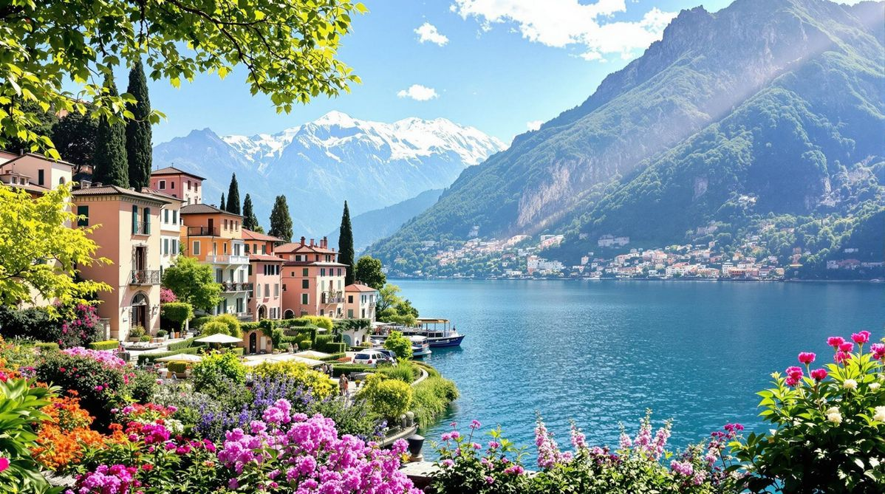
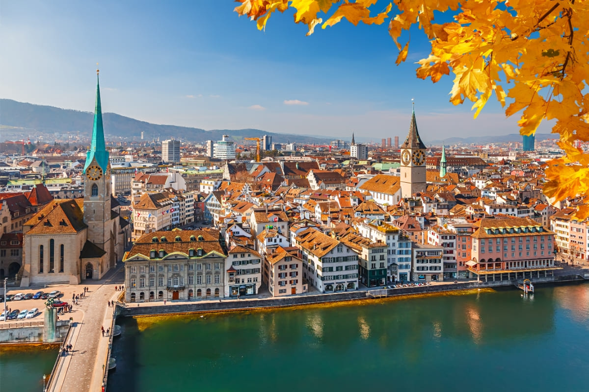

Lago de Genebra
Um dos maiores lagos da Europa Central, cercado por montanhas e cidades encantadoras como Genebra e Montreux.
Interlaken

Cidade situada entre dois lagos e rodeada pelos Alpes. É conhecida por esportes radicais e paisagens impressionantes
Zurique
A maior cidade da Suíça, famosa por sua qualidade de vida, museus, arquitetura moderna e vida urbana sofisticada.